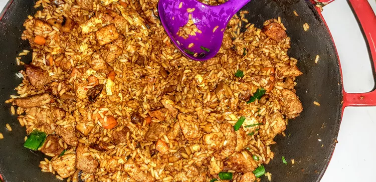

List recipes
Chinese Rice

Stir-fried pork is tossed with cooked rice, spring onions, peas, and curry paste, a brilliant combination!
You just need ingredients
- 1 tablespoon Chinese rice wine, or more to taste
- 1 teaspoon soy sauce
- 1 teaspoon cornstarch
- 5 ounces pork fillet, thinly sliced
- 2 tablespoons peanut oil
- ½ onion, diced
- 2 teaspoons curry powder
- ¼ teaspoon water
- 1 spring onion, or more to taste, sliced
- ½ teaspoon salt
- 1 ¾ cups cold cooked rice
- ¾ cup green peas
Steps
- Mix rice wine, soy sauce, and cornstarch together in a bowl. Add pork; toss until evenly mixed.
- Preheat a wok or deep saucepan over medium-high heat. Pour in peanut oil. Cook pork in the hot oil in batches until evenly browned, 2 to 3 minutes per batch. Transfer to a plate using a slotted spoon. Cook onion in the remaining oil until softened, 2 to 3 minutes.
- Mix curry powder and water in a bowl to form a paste.
- Stir curry paste, spring onion, and salt into the wok. Add rice, stirring to break up any lumps. Stir in peas. Return pork to the wok; cook and stir until rice and pork are heated through, 4 to 5 minutes.